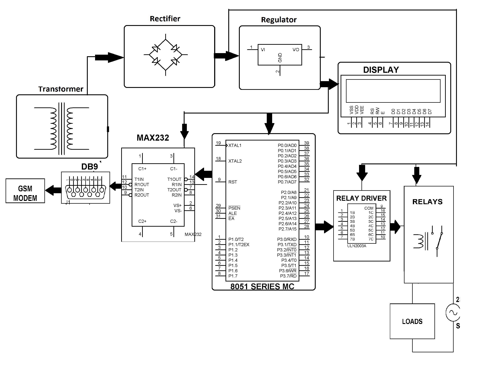

El proyecto tiene como objetivo un sistema que permita al usuario controlar los dispositivos domesticos a traves de Sms junto con reconocimientos. Aqui el usuario no necesita encender y apagar electrodomesticos manualmente. Nuestro sistema permite que el usuario opere estos dispositivos a traves de sms, tambien el estado del tiempo en que el dispositivo se enciende o no se envea al usuario a traves de un sms de retorno. Esto lo pueden usar los usuarios domesticos y los usuarios de la compania para operar y controlar el estado de los electrodomesticos y las empresas desde cualquier parte del mundo.
Es un sistema muy conveniente para los usuarios, ya que les permite controlar y controlar facilmente estos dispositivos desde cualquier lugar. Un ejemplo es que una persona puede encender su casa u oficina AC 15 minutos antes de que llegue para que tenga un ambiente fresco tan pronto como llegue alli.
El sistema funciona de la siguiente manera, el sms enviado por el usuario es recibido por el receptor Gsm y luego enviado a un microcontrolador 8051 para procesarlo. El microcontrolador luego activa el relevador apropiado para ese dispositivo y lo controla.
Los materiales que se requieren son los siguientes:
En cuanto a software se requiere:
Diagrama circuital del proyecto:
 link Video del Proyecto volver al inicio